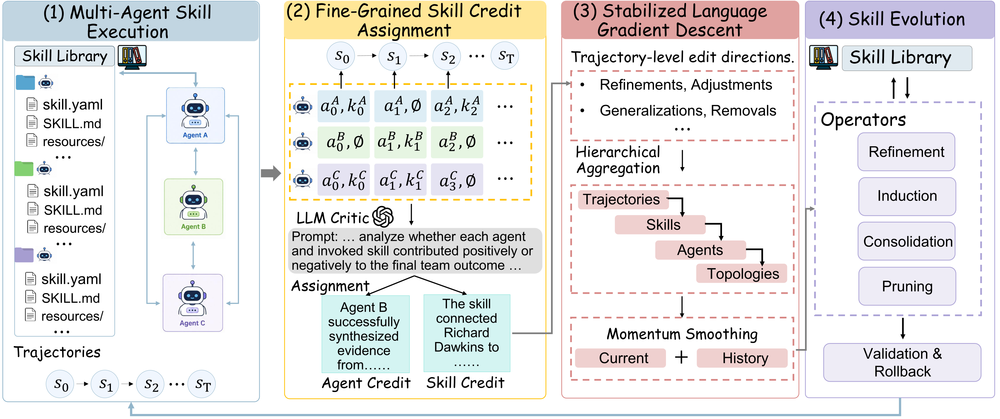
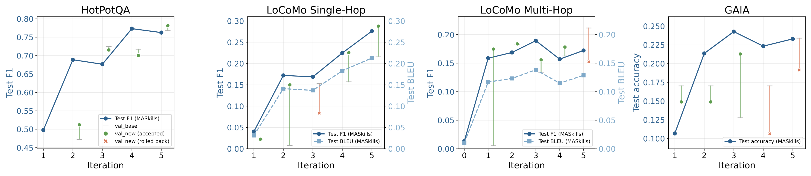
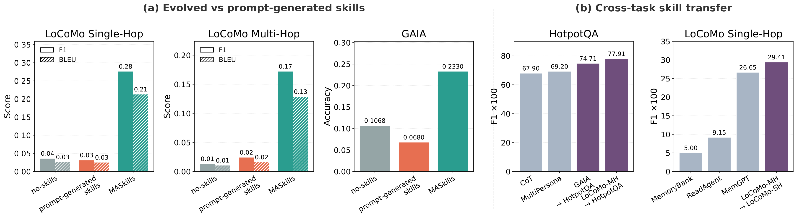
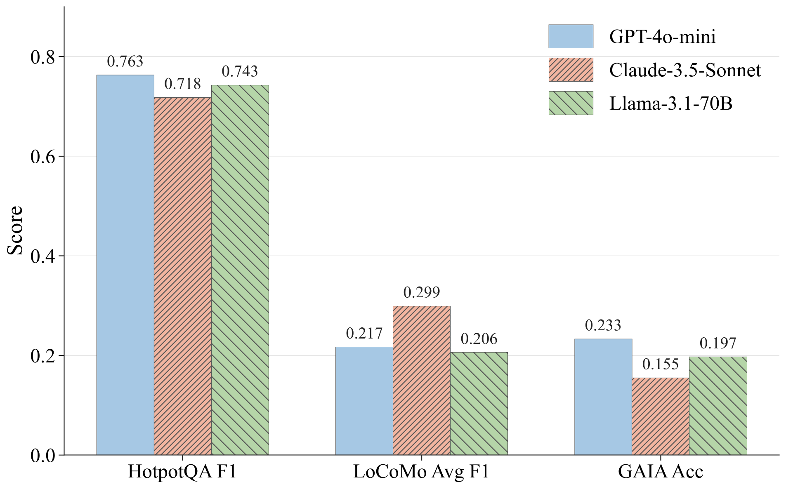

Accepted to EMNLP 2026 Findings
Don't just remember what happened — learn a skill you can invoke again.

LLM-based multi-agent systems have shown strong performance on complex tasks, yet continual improvement from interaction experience remains challenging. Existing self-reflection methods build experience memories, but memories are mostly hard to invoke, refine, or scale, while agent skills offer a more actionable unit: structured procedural knowledge that specifies when to act, how to act, and which resources or tools to use.
We introduce MASkills, a continual learning framework that optimizes multi-agent LLM systems through agent skills. MASkills presents a new agent-optimization pipeline that integrates skill-conditioned credit assignment, hierarchical credit aggregation, and momentum-smoothed optimization, enabling agent skill libraries to evolve through refinement, induction, consolidation, and pruning.
Experiments on HotpotQA, LoCoMo, and GAIA demonstrate the effectiveness of MASkills across multiple agentic tasks. Our code is available at github.com/DaRL-GenAI/MASkills.
The standard recipe for a self-improving agent is self-reflection into an experience memory. Memories do preserve useful experience, but they are a weak basis for continual improvement: they record what happened in past trajectories rather than which action policy to reuse, they lack reliable invocation conditions, and as the store grows, useful lessons get buried under noisy, redundant, and stale free-form records.
A skill is a better unit. It is a structured package of procedural knowledge — a
skill.yaml descriptor, a SKILL.md body, and auxiliary resources — that tells an
agent when to invoke it, how to act, and which tools to use. Agents discover skills from lightweight
descriptions, load the details on demand, and refine them as experience accumulates. Recent work develops
such reusable abstractions, but stays predominantly single-agent, ignoring the coordination dynamics
that determine team-level utility.
MASkills performs policy improvement directly in the agents' skill space rather than their parameter space, following the language-space policy-gradient structure of TextGrad and LangMARL. Each of its three stages answers one of the challenges above.
Skills are exposed as callable tools, so every invocation is visible in the execution log as a skill trace ξi. For each skill k that agent i actually invoked along a trajectory, a centralized language critic produces a structured credit Citext(τ, k) by contrasting the timesteps where k was active against the counterfactual where it was not — explaining whether the skill helped coordination, was redundant, caused a failure, or should be generalized. The critic also emits an agent-level residual credit for effects no single skill explains; that residual is what signals when a genuinely new skill is needed.
Raw critiques are noisy and often contradictory. MASkills first converts each credit into a trajectory-level edit direction gi(τ, k) — a structured natural-language patch proposing refinements, adjustments, generalizations, or removals. An LLM aggregator then merges these recursively across four axes at once — trajectories → skills → agents → topologies — performing pattern merging, conflict resolution, and prevalence weighting. Because aggregation is topological, centralized, decentralized-peer, and hierarchical systems are just three ways of rooting the same step, and everything downstream is unchanged.
Finally, updates carry momentum: each edit combines the current aggregated gradient with the previous cycle's, so transient or contradictory critiques are suppressed and persistent improvements survive. This is the language-space analogue of momentum gradient descent.
Refinement. Useful but imperfect skills get localized, diff-style edits that touch only the regions the aggregated feedback implicates, preserving unrelated procedural structure and previously validated behavior.
Induction. When failures persist that no existing skill can address, a new skill is proposed from the hard trajectories plus the accumulated edit directions — adding a genuinely new procedural abstraction rather than patching an old one.
Consolidation. Functionally overlapping skills are merged into higher-level macro skills, synthesizing shared behavioral structure and keeping the library from fragmenting.
Pruning. Skills whose momentum-stabilized utility stays negative, redundant, unstable, or negligible are removed, bounding the growth of the skill space.
Every candidate edit is evaluated on a held-out validation set before it is committed, with all other agents' skills held fixed. An update is accepted only if validation return does not drop by more than a tolerance δ that absorbs rollout noise; otherwise it is rolled back. Momentum plays the role of variance reduction; validation and rollback play the role of a trust region.
All tasks are instantiated as cooperative Dec-POMDPs: a team of role-specialized LLM agents (retrieval, verification, planning, memory tracking, tool use, decision making) interacts under decentralized execution toward a shared team objective. GPT-5.1 serves as the optimizer backbone; GPT-4o-mini (HotpotQA, LoCoMo) and Qwen2.5-7B (GAIA) act as the execution backbones.
| Method | IO | CoT | CoT-SC | MedPrompt | MultiPersona | Self-Refine | ADAS | MASkills |
|---|---|---|---|---|---|---|---|---|
| F1 | 68.1 | 67.9 | 68.9 | 68.3 | 69.2 | 60.8 | 64.5 | 76.3 |
MASkills improves multi-hop reasoning and evidence integration over prompting-based and multi-agent reasoning baselines.
| Method | SH-F1 | SH-BLEU | MH-F1 | MH-BLEU |
|---|---|---|---|---|
| MemoryBank | 5.00 | 4.77 | 5.56 | 5.94 |
| ReadAgent | 9.15 | 6.48 | 5.31 | 5.12 |
| LoCoMo | 25.02 | 19.75 | 12.04 | 11.16 |
| MemGPT | 26.65 | 17.72 | 9.15 | 7.44 |
| MASkills | 27.61 | 21.30 | 17.22 | 12.87 |
SH = single-hop, MH = multi-hop memory queries.
| Framework | L1 | L2 | L3 | Avg. |
|---|---|---|---|---|
| Base | 12.8 | 3.8 | 0.0 | 6.8 |
| Search-o1 | 23.1 | 17.3 | 0.0 | 17.5 |
| Vanilla ReAct | 28.2 | 15.3 | 0.0 | 18.4 |
| R1-Searcher | 28.2 | 19.2 | 8.3 | 20.4 |
| MASkills | 35.3 | 22.6 | 0.0 | 23.3 |
MASkills leads on average and on L1/L2, reflecting stronger planning, decomposition, and tool use.

Two checks. First, are evolved skills better than skills an LLM just writes when asked? Prompt-generated skills turn out to give only marginal gains over prompting the agents directly, whereas continually optimized skills produce substantial improvements on both LoCoMo and GAIA — iterative, trajectory-driven refinement yields much higher-quality procedural abstractions than one-shot generation.
Second, do they transfer? We move skill libraries learned in one environment into unseen target tasks with no additional optimization. Transferred skills improve downstream performance across every source–target pair tested: skills optimized on GAIA push HotpotQA past strong prompting baselines like CoT and MultiPersona, and LoCoMo-derived skills improve long-horizon memory reasoning. MASkills is capturing reusable behavioral patterns, not task-specific prompting heuristics.

We run MASkills under centralized, hierarchical, and decentralized-peer structures with the optimization pipeline untouched. It stays competitive throughout — the framework is not coupled to any one orchestration structure. Interestingly, the best topology is strongly task-dependent. HotpotQA and GAIA favor decentralized peers, which benefit from diverse exploration and independent retrieval or tool trajectories. LoCoMo favors centralization, especially for multi-hop memory: a shared global state reduces memory fragmentation across sessions and keeps long-horizon reasoning coherent. Hierarchical coordination lands in between.
| Topology | HotpotQA F1 | LoCoMo-SH F1 | LoCoMo-SH BLEU | LoCoMo-MH F1 | LoCoMo-MH BLEU | GAIA-L1 | GAIA-L2 | GAIA-Avg |
|---|---|---|---|---|---|---|---|---|
| Centralized | 72.46 | 27.68 | 20.76 | 22.27 | 17.70 | 17.65 | 11.54 | 11.76 |
| Hierarchical | 71.86 | 27.55 | 20.85 | 22.03 | 17.62 | 20.59 | 11.54 | 12.75 |
| Decentralized Peer | 76.30 | 27.61 | 21.30 | 17.22 | 12.87 | 35.30 | 22.60 | 23.30 |
Performance under different coordination topologies; best per column in red.

| Method | LoCoMo-MH | GAIA |
|---|---|---|
| MASkills (Full) | 17.2 | 23.3 |
| w/o Skill credit assignment | 14.2 | 17.1 |
| w/o Momentum smoothing | 16.4 | 21.9 |
| w/o Validation rollback | 6.6 | 13.5 |
| w/o Consolidation / pruning | 13.9 | 13.0 |
Every component contributes. Validation rollback matters most — without it, LoCoMo-MH collapses from 17.2 to 6.6, confirming that reverting unstable edits is what prevents performance collapse during iterative optimization. Skill-conditioned credit assignment is next, followed by consolidation/pruning and momentum smoothing.
Our experiments focus on cooperative settings with relatively fixed roles and communication topologies; dynamic, adversarial, and open-world environments remain underexplored. Extending MASkills to adaptive organizational structures, competitive multi-agent games, and large-scale decentralized coordination is natural future work.
As the skill library keeps expanding, scalability challenges emerge in retrieval, consolidation, and coordination efficiency. Hierarchical skill organization, retrieval compression, and lifelong-learning mechanisms are promising directions for efficient long-term skill evolution at scale.
Ethics. Automatically evolved skills can amplify undesirable behaviors inherited from the underlying LLMs — factual errors, social biases, unsafe tool use, overconfident reasoning. Held-out validation, rollback, consolidation, and pruning mitigate this, but they are not a substitute for human oversight in high-stakes applications. Deployments that learn from user interaction should follow strict privacy practices and maintain transparent audit logs of skill modifications.
@inproceedings{yao2026maskills,
title={MASkills: Continual Skills Optimization for Multi-Agent LLM Systems},
author={Yao, Huaiyuan and Liu, Xiaoou and Fleming, Charles and Chen, Tianlong and Wei, Hua},
booktitle={Findings of the Association for Computational Linguistics: EMNLP 2026},
year={2026},
url={https://github.com/DaRL-GenAI/MASkills},
}